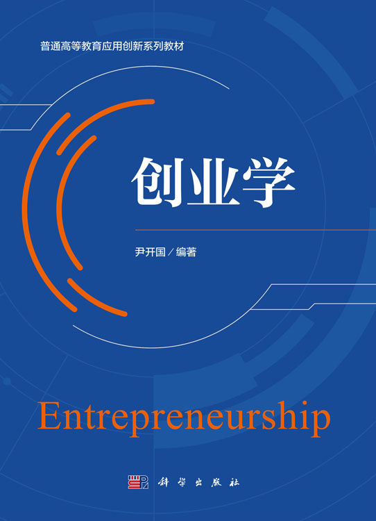

围绕尹开国《创业学》（北京：科学出版社，2026）全书11章的核心内容，拆解为可独立访问、可独立引用、可独立训练的方法论卡。每张卡均标注教材出处（章节、页码）、核心结构（模型/步骤/适用边界）与使用建议（场景、对象、注意事项）。

知识链接讲清概念，方法论卡拆解方法，创业案例演示用法——三套卡片相互验证，构成完整的创业学习与认知链路。
教材"知识链接"栏目卡片化：概念、术语与理论背景的来龙去脉，与方法论卡互为支撑。
11 章 · 79 张 · 按教材章节分组，每张标注出处与关键结构。静态可读、可引用。
教材"相关事例"栏目卡片化：叙事化案例卡，标注关键决策点，并反链到所演示的方法论卡。
SYB（Start Your Business，开始你的创业）实训以商业模式设计为主线：先在方法论卡与案例中学习，再进入实训系统，把自己的项目想法做成一份可验证的商业模式。
六大实训阶段环环相扣：机会识别与开发 → 客户洞察与价值主张 → 商业模式设计 → 验证与迭代 → 财务测算 → 商业计划书与路演。
教师、导师或培训者可在 BizLab 中对练习成果做陪练式点评与结构化反馈，同样适合自主学习者与创业工作坊场景。